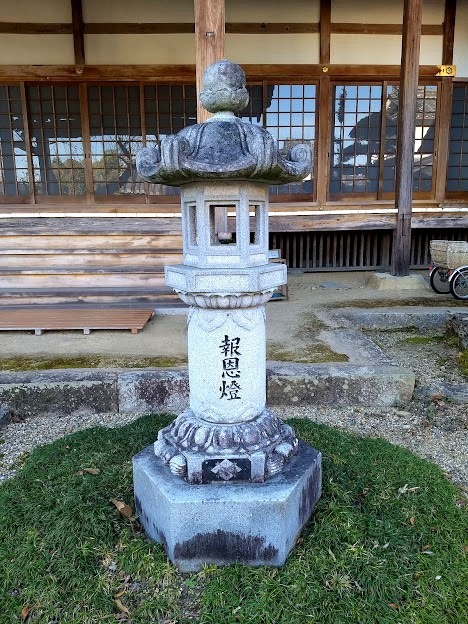
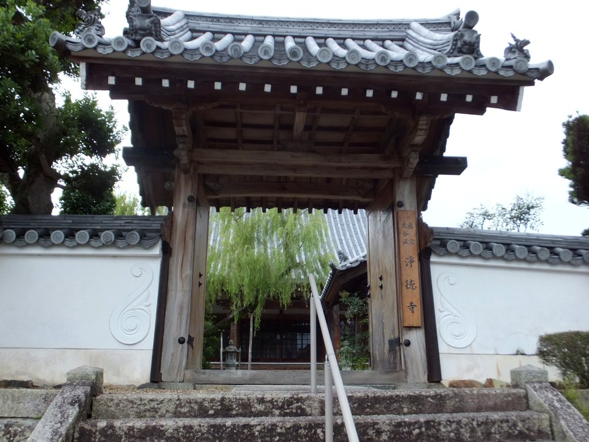
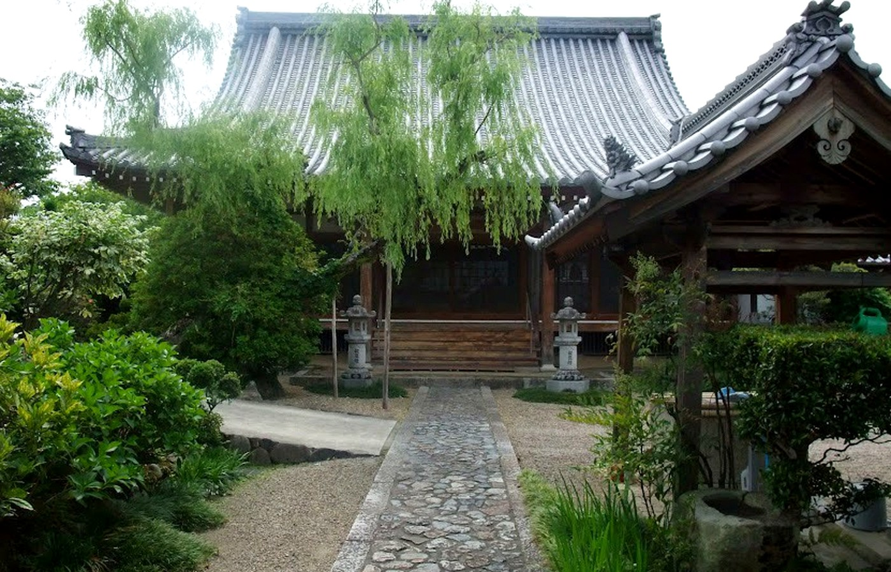
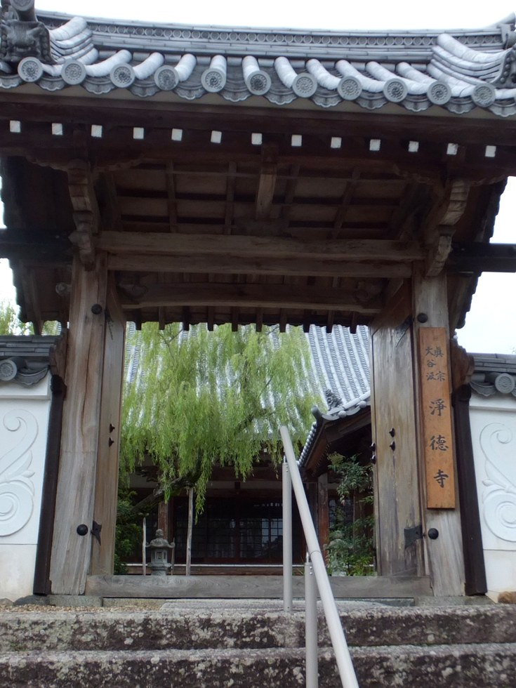

ご相談しやすさ
24時間お電話受付
初めて永代供養を考える方へ
永代供養は、初めて検討される方にとって分かりづらい言葉が多く、不安も生まれやすいものです。 浄徳寺では、まず安心してご相談いただけることを大切にしています。
すぐに決める必要はありません。気になる点を整理するところからご相談いただけます。
掲載金額には、永代使用料・永代管理料・納骨法要料が含まれています。
地域に根ざしたお寺として、落ち着いた環境のなかでご供養いただけます。

こんなお悩みに
浄徳寺の永代供養墓
内容をできるだけわかりやすく整理し、初めての方にも安心してご検討いただけるようにしています。
お寺が責任をもってご供養いたします。長く安心してお任せいただける永代供養墓です。
ご遺骨が他の方と一緒になることはありません。個別にお納めするかたちをご希望の方に向いています。
お寺とのご縁が初めての方にもご相談いただきやすいよう、宗派を問わずご案内しています。
掲載している金額には、永代使用料・永代管理料・納骨法要料が含まれています。
仏様の人数に制限はありません。ご家族でのご相談もしやすい永代供養墓です。
ご相談はお電話中心で承っています。24時間対応可能ですので、気になった時にご連絡いただけます。
費用のご案内
掲載している金額には、永代使用料・永代管理料・納骨法要料が含まれています。
25万円
29万円
33万円
37万円
お寺紹介
浄徳寺は真宗大谷派の寺院です。能勢電鉄妙見線の「多田駅」「鼓滝駅」「鶯の森駅」が最寄りであり、歴史ある地域に根ざしたお寺です。
初めて訪れる方にも「きちんとしていそう」「安心できそう」と感じていただけるような、落ち着いた境内の雰囲気を大切にしています。
境内の写真を見る


境内の雰囲気
山門、本堂、石灯籠、境内の小道など、現地の雰囲気が伝わる写真を掲載しています。

山門をくぐると、穏やかな空気のなかに本堂や境内の景色が広がります。 写真からも、浄徳寺の整った雰囲気を感じていただければ幸いです。



ご相談からご納骨まで
見学のご希望やご事情、ご不明点をお伺いします。時間帯は気にせず、お気軽にご連絡ください。
永代供養の内容や費用について、初めての方にもできるだけわかりやすくご案内いたします。
その場で決める必要はありません。気になる点を整理しながら、落ち着いてご検討ください。
ご希望が固まりましたら、必要なお手続きやご納骨についてご案内いたします。
お問い合わせ
初めての方にも分かりやすくご案内いたします。24時間対応可能です。
兵庫県川西市西多田1-12-8
アクセス
〒666-0138
兵庫県川西市西多田1-12-8